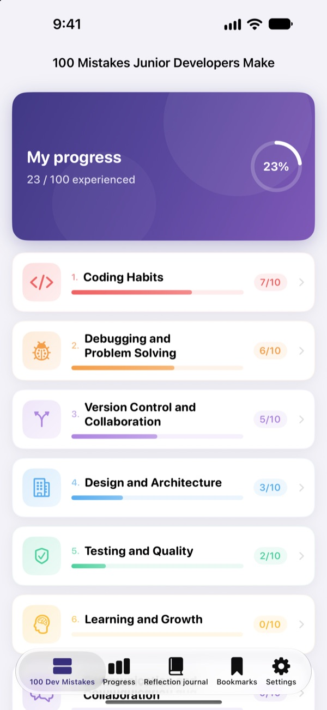
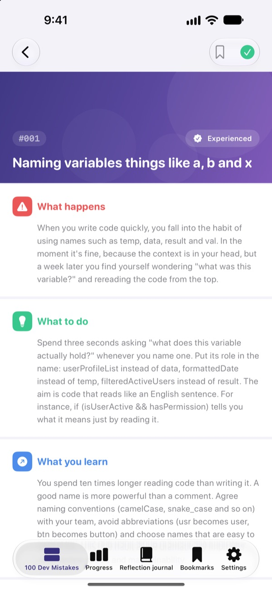
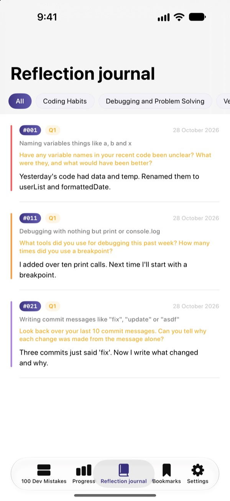
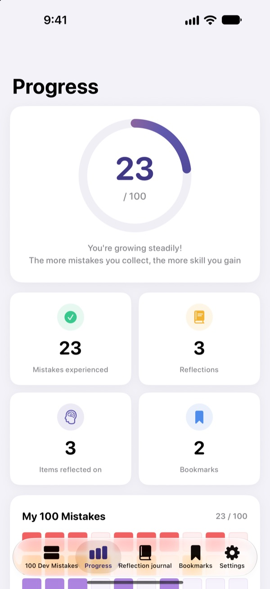

Learn the mistakes
before they hurt
The 100 mistakes junior developers make most, in one place. For each one, read what happens, what to do and what you learn, then answer a reflection question so you don't make it twice.
The first 30 mistakes are free. Works on iPhone, iPad and Mac.

Open a mistake
These are the 10 mistakes in the first free category, word for word from the app. Mark the ones you've been through as Experienced.
Same comment in code review, again?
Vague variable names, 200-line functions, copy-pasted code. Every senior dev has been there, but you only find out by walking into it. 100 Dev Mistakes shows you those mistakes first and has you reflect on your own work, so you stop repeating them.
What happens, what to do, what you learn
Open any mistake and it's broken into three parts: what happens, what to do, and what you'll learn from it.
Ten categories, from coding habits to security and performance, covering only the mistakes that keep showing up on real teams.

Reflection questions, so it sticks
Every mistake comes with 4 reflection questions, 400 in all. Answer them with your own projects in mind and what you read turns into experience.
Your answers collect in the reflection journal, sorted by category, ready to revisit.

See how far you've come
Tick off the mistakes you've experienced and your progress builds up by category and overall. Bookmark anything you want to come back to.
Everything syncs through iCloud across iPhone, iPad and Mac.

Three steps to start
- 1
Pick a category
Coding habits, debugging and version control are open for free.
- 2
Read and tick
Tap Experienced on the mistakes you've made yourself.
- 3
Reflect
Jot down an answer, however short. It lands in your reflection journal.
The 10 categories
- Coding Habits
- #001–#010 · Free
- Debugging and Problem Solving
- #011–#020 · Free
- Version Control and Collaboration
- #021–#030 · Free
- Design and Architecture
- #031–#040 · PRO
- Testing and Quality
- #041–#050 · PRO
- Learning and Growth
- #051–#060 · PRO
- Communication and Collaboration
- #061–#070 · PRO
- Deployment and Operations
- #071–#080 · PRO
- Security and Data
- #081–#090 · PRO
- Performance and Optimisation
- #091–#100 · PRO
Each category has 10 mistakes, and each mistake has 4 reflection questions.
30 free. All 100 with PRO.
Free
- The first 3 categories, 30 mistakes
- Their 120 reflection questions
- Checklist, reflection journal, progress and bookmarks
- iCloud sync across iPhone, iPad and Mac
100 Dev Mistakes PRO
- The other 7 categories, 70 more mistakes (#031–#100)
- 280 more reflection questions
- Every future content update
Monthly, yearly (up to 50% less than monthly) or a one-time lifetime purchase.
No personal data collected. No analytics, no ads.
Questions
What's free?
All 30 mistakes and reflection questions in coding habits, debugging and problem solving, and version control and collaboration. The checklist, reflection journal, progress, bookmarks and iCloud sync are free too.
How do I use PRO on another device?
Sign in with the same Apple ID, then tap Restore purchases on the subscription screen.
How do I cancel my subscription?
In Settings › Apple ID › Subscriptions, at any time. Subscriptions renew automatically unless you cancel at least 24 hours before the current period ends. Lifetime is a one-off payment.
My data isn't syncing between devices.
Make sure every device is signed in to iCloud with the same Apple ID and that iCloud is turned on for this app in Settings. Syncing also needs a network connection.
How do I erase everything?
Tap Reset all data in the app's settings. Your ticks, reflections and bookmarks are deleted, and this can't be undone.
Which devices does it run on?
iPhone, iPad and Mac. PRO unlocks on every device signed in with the same Apple ID.
Is my data sent anywhere?
No. Your ticks and reflections are stored only on your devices and in your own iCloud. The app collects no personal data and has no analytics or ads.
Questions or suggestions? Write to leeo@kakao.com.